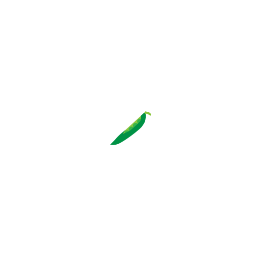
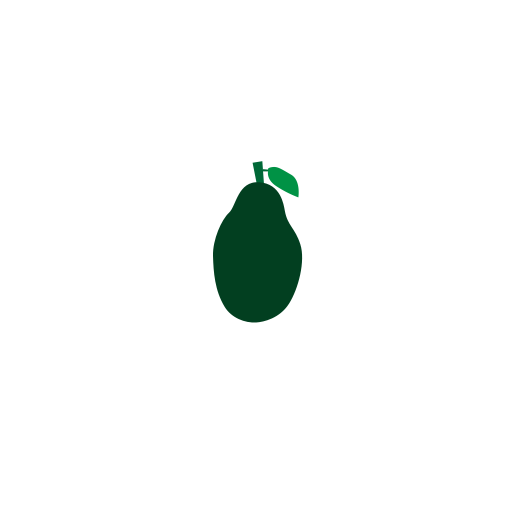
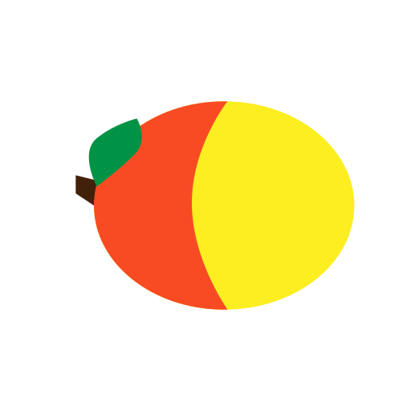
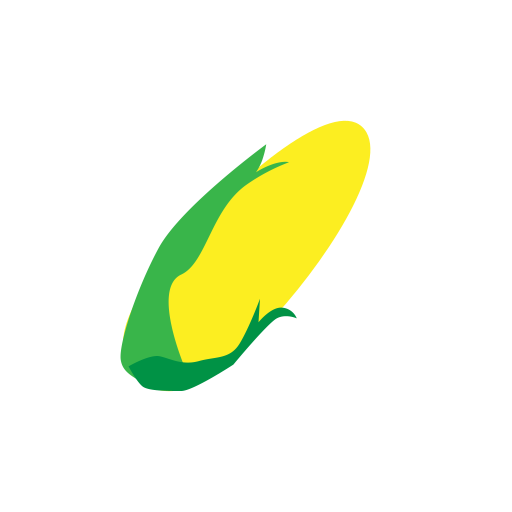
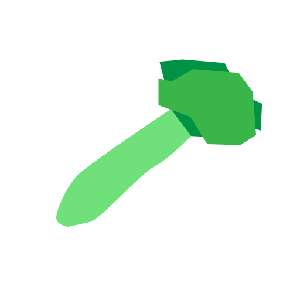
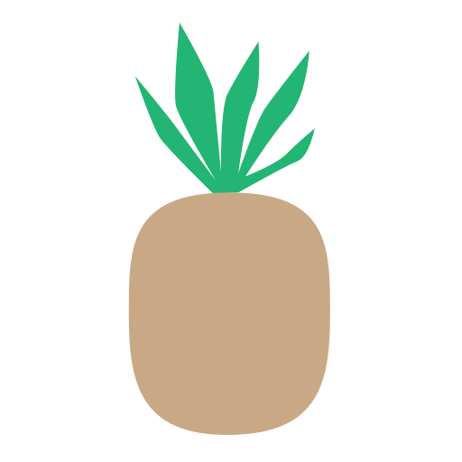
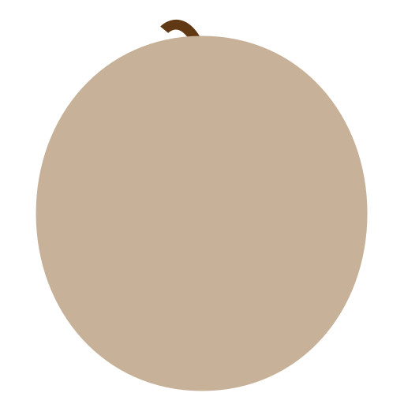
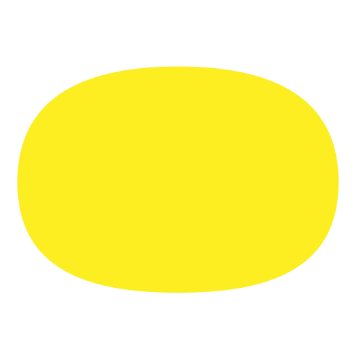
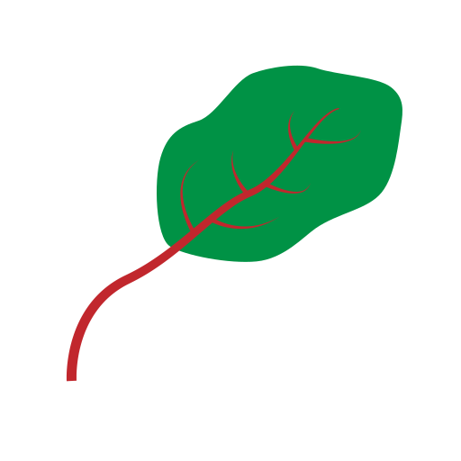

Mutter
Vor der Schwangerschaft:
- Normaler Zyklus der Frau
- Befruchtung.
Schwangerschaftszeichen:
- Brustspannen
- Übelkeit, Brechreiz
- Müdigkeit, Kreislaufstörung
Schwangerschaftstests:
- Schangerschaftstest im Blut positiv (Zuverlässigkeit grösser 95%)
- Schangerschaftstest im Urin positiv (Zuvelässigkeit grösser 80%)
Körper:
- Schwangere spürt Kindsbewegungen
Untersuchungen:
- 1. Ultraschalluntersuch zur Bestätigung der Schwangerschaft und zur Bestimmung des Geburtstermin
- 2. Ultraschalle Herz- und Organscreening
- 3. Ultraschall zur Wachstumskontrolle und Bestimmung der Lage des Kindes im Bauch
- Test auf Schwangerschaftsdiabetes
- Der Kopf des Baby sollte nun nach unten zeigen
- Funktion der Plazenta wird überprüft
1. Trimenon – Phase der Ambivalenz
- Stimmungsschwankungen
- wiederstreitende Gefühl
2. Trimenon – Wendung der Schwangeren nach Innen
- Entstehung Familie (beim ersten Kind)
- Kinder wird "selbstständig"
- Ängste wegen Untersuchungen (Pränataldiagnostik)
3. Trimenon – Vorbeitung auf die Geburt
- Nestbautendenzen
- Ungeduld (Beschwerlich)
Tipps:
- Beim Autofahren die Gurte nicht über, sondern unter- und oberhalb des Bauches durchführen
Baby
Mohnsamen
2mm
unter 1g
Sesamsamen
3mm*
unter 1g

Linse
5mm*
unter 1g
Blaubeere
120mm*
unter 1g
Kidneybohne
160mm*
unter 1g
Weintraube
230mm*
2g
Olive
310mm*
4g
Feige
410mm*
7g
Limette
540mm*
14g
Erbsenschotte
740mm*
23g

Zitrone
870mm*
43g

Kleiner Kürbis
1010mm*
70g
Avocado
1160mm*
100g

Ingwerwurzel
1300mm*
140g
Paprika
1420mm*
190g
Kleiner Kürbis
1530mm*
240g

Banane
"1640mm* / 2560mm**"
300g
Karotte
2670mm**
360g
Mango
2780mm**
430g

Maiskolben
2890mm**
500g

Aubergine
3000mm**
600g

Spaghettkürbis
3460mm**
660g
Kohlrübe
3560mm**
760g
Blumenkohl
3660mm**
875g
Kokosnuss
3760mm**
1000g
Staudensellerie
3860mm**
1200g

Römersalat
3990mm**
1300g
Rotkohl
4110mm**
1500g
Grünkohl
4240mm**
1700g
Ananas
4370mm**
1900g

Cantaloup-Melone
4500mm**
2100g

Honigmelone
4620mm**
2400g

Kohlkopf
4740mm**
2600g
Mangold
4860mm**
2900g

Lauch
4980mm**
ungefähr 3000g
Mini-Wassermelone
5070mm**
ungefähr 3300g
Kleiner Kürbis
5120mm**
ungefähr 3500g
Vor der Schwangerschaft:
- Das Baby existiert erst ab der dritten Woche
- Die befruchtete Eizelle wandert durch den Eileiter zur Gebärmutter und wird grösser
- Einnistung der Blastozyste in die Gebärmutterschleimhaut. Ab diesem Zeitpunkt spricht man von einem Embyro.
Entwicklung:
- Der Embyro ist ein kleiner Zellhaufen und hat bereits jetzt eine einfache Herzanlange und das Kapillarsystem
- Die ersten Herzmuskelkontraktionoen sind sonografisch nachweisbar
- Der Kopf mit Gesicht wächst überproportional
- Ausbildung Fingerstrahlen
- Herz wird in vier Räume aufgeteilt
- Oberschenkelknochen als Anfang der Verknöcherung
- Der Embryo wird ab nun als Fötus bezeichnet
- Die Hände haben noch Hautlappen zwischen den Finger
- Phase schnelles Wachstum
- Bewegungen im Ultraschall erkennbar
- Anordung Haare auf Kopfhaut
- Augen bewegen sich nach vorne und die Ohren zur Seite des Kopfes
- Herz bewegt sich an definitive Position
- Die Lungenbläschen entfalten sich
- Lanugohaare bedecken den Fötus um vor dem Fruchtwasser schützende Käseschmiere festzuhalten/li>
- Käseschmiere als Schutz für Haut
- Der Uterus wird angelegt
- Erhöhte Gewichtswachstum
- Die Fingernägel entstehen
- Die Lanugohaare verschwinden allmählich wieder
- Weisses Fettgewebe nimmt zu
- Kind fast fertig entwickelt
- Die Lungenreifung wird in der 35. Woche abgeschlossen
- Fettzunahme von 14g pro Tag
Verhalten:
- Der Fötus kann am Daumen lutschen
- Der Lichtreflex der Pupillen kann ausgelöst werden
- Der Fötus kann zugreifen und wendet sich Lichtquelle zu
Geburt:
- Ab der zwölften Woche sinkt das Risiko einer Fehlgeburt massiv
- Ab jetzt ist es keine Frühgeburt mehr
- Errechneter Geburstermin
- nur 4% werden am festgelegten Termin geboren
- 44% werden nach der 40. SS-Woche geboren
- Ab Woche 42 spricht man von Übertragung